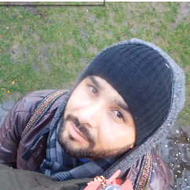

About Me
 In summary I'm a Developer. Over a decade in Development work both in the Operations and Technical support. Not only do I understand the business objectives but I'm able to translate them into applications that meet our business needs. I enjoy turning an idea or business requirement into a distinguished software application. The challenge and thrill of building something new or troubleshooting something in production is exciting to me.
On the other hand, when I’m not on my computer, I love to enjoy life. Either, I’m working out, playing soccer or I’m out traveling. My biggest drive is to continue working remotely and try to make a difference to those I meet in my adventures around the world. Ultimately, I will like to get to a point in my life to share with those around me my experiences so they can better their lives. Help people to have access to all these opportunities around the world so they can achieve their dreams and aspirations just as I have.